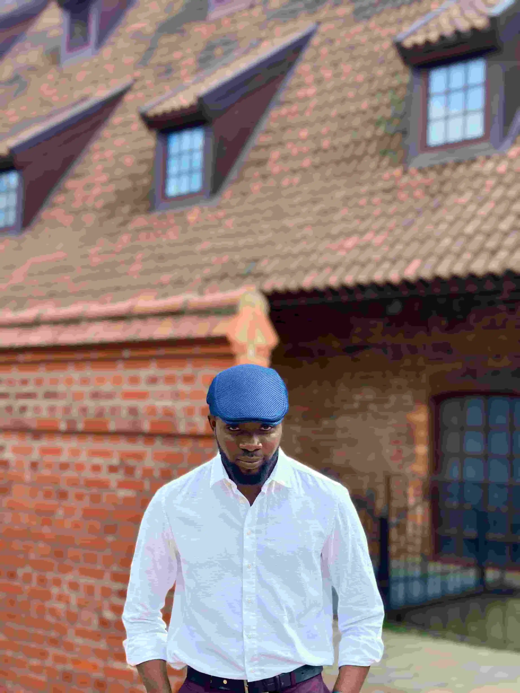

Home
Get to know Me
Hi, I'm Micheal, a student at Brigham Young University - Idaho with a genuine curiosity for the world and the people in it. I have a deep passion for travel, not just for the sights, but for what you learn when you step outside your comfort zone. Every new destination is a chance to see life through a different lens — the food, the language, the daily rhythms people take for granted. There's something irreplaceable about being present in a place and letting its culture wash over you. Beyond travel, I'm a lifelong learner in the truest sense. Whether it's history, anthropology, language, or a random documentary at midnight, I'm always chasing that feeling of understanding something I didn't before. Culture, in particular, fascinates me, the way traditions form, how values get passed down through generations, and what connects us all beneath the surface differences. At BYU-Idaho, I'm building the kind of education that doesn't just prepare me for a career, but for a life of meaningful engagement with the world around me.
